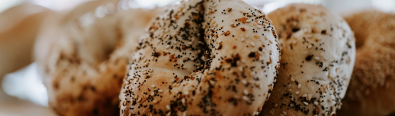

Hand-Rolled, Boiled, Baked

The Classic
Any bagle, toasted or not, with plain or scallion cream cheese.
$3.50
Any bagle, toasted or not, with plain or scallion cream cheese.
$3.50Ask for regular and you'll get it milky and sweet, the way this counter has poured it since 1979. We make cortados too - we're not stubbon